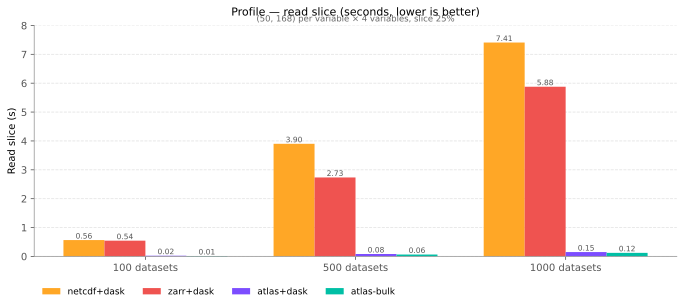
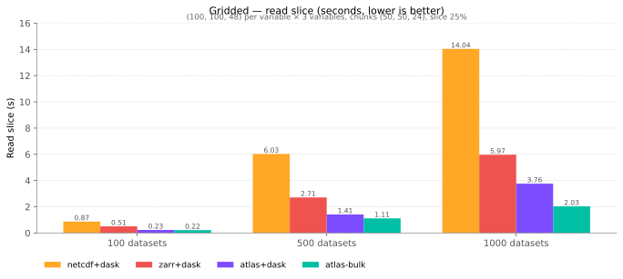

vs Zarr / netCDF
atlas lives in the same neighbourhood as
Zarr v3 and
netCDF4: all three store
labelled N-D arrays with chunking and compression, and all three are
reachable from xarray. They differ in layout, which is what makes atlas
faster on a specific class of workloads and slower on others.
What each one is, in one line
| Unit of storage | "Many datasets" layout | |
|---|---|---|
| netCDF4 | One self-describing .nc file per dataset |
N separate .nc files (or one file with N internal groups) |
| Zarr v3 | One directory of chunk files per array | N separate .zarr stores (or one store with N groups) |
| atlas | One directory holding N datasets, sharing physical files by array name | N datasets in one store, by construction |
The first column is the natural unit each format optimises for. Atlas is the only one of the three whose natural unit is "a fleet of related datasets", which is why the comparison gets interesting once N gets large.
How atlas stores N datasets
When ten datasets all define_array("temperature", ...) with the same
schema, atlas writes them all into one temperature/data.af file, keyed by
dataset name inside the file. Adding the 1000th dataset that re-uses an
existing schema is one append + one atlas.json rewrite, not 1000 new
directories. Atlas.list_arrays() returns the distinct array names in
the store — usually a small constant — while Atlas.list_datasets()
returns the logical names that may run into the thousands.
This shape unlocks two further wins:
- Bulk cross-dataset reads.
Atlas.read_array_across_stacked(array, names, start, shape)shares a singleRwLock::readguard on the shared physical file and dispatches N per-dataset reads on the tokio runtime, filling a pre-allocated(N, *slice_shape)numpy buffer. One PyO3 round trip, no Python-sidenp.stackcopy. The closest zarr equivalent isopen_mfdataset(..., parallel=True).isel(...).load(), which still has to open N stores and run the slice through xarray. - One flush amortises N writes. Atlas's mutations are in-memory until
flush(); N consecutiveadd_xarray_datasetcalls produce one delta file per touched array name regardless of N. See Durability and flushing.
Where atlas wins (with numbers)
These come from the same harness as the Benchmarks page.
Each chart sweeps datasets ∈ {100, 500, 1000}; the per-case tables
that follow zoom in on the 1000-dataset row with full write and storage
columns. zarr and netcdf are run via their canonical
xr.open_mfdataset(parallel=True, ...) paths (dask under the hood);
atlas runs via either the dask.delayed per-dataset fan-out
(--use-dask) or the bulk PyO3 path (Atlas.read_array_across_stacked).
profile case
(50, 168) per variable × 4 variables, slice 25%. Overhead-dominated;
the per-dataset work is small enough that file-open / metadata cost
dominates the netCDF and zarr read paths.

At 1000 datasets:
| Backend | Read slice (s) | Write (s) | Storage (MiB) |
|---|---|---|---|
atlas-bulk (Atlas.read_array_across_stacked) |
0.122 | 1.24 | 110 |
atlas+dask (view.read_arrays in dask.delayed) |
0.148 | 5.63 | 110 |
zarr+dask (open_mfdataset(parallel=True)) |
5.879 | 16.35 | 119 |
netcdf+dask (open_mfdataset(parallel=True)) |
7.409 | 4.32 | 117 |
On the small-per-dataset workload atlas-bulk reads ~48× faster than zarr and writes ~13× faster. The gap widens with dataset count because per-dataset open cost compounds for the netcdf/zarr paths but amortises to one PyO3 call for atlas-bulk.
gridded case
(100, 100, 48) per variable × 3 variables, chunks (50, 50, 24),
slice 25%. Decompression-dominated; ~1.8 GB raw. All backends push the
slice down to chunk-level reads.

At 1000 datasets:
| Backend | Read slice (s) | Write (s) | Storage (MiB) |
|---|---|---|---|
atlas-bulk (Atlas.read_array_across_stacked) |
2.031 | 53 | 6387 |
atlas+dask (view.read_arrays in dask.delayed) |
3.763 | 62 | 6387 |
zarr+dask (open_mfdataset(parallel=True)) |
5.968 | 31 | 6392 |
netcdf+dask (open_mfdataset(parallel=True)) |
14.037 | 113 | 5596 |
On the large-per-dataset workload atlas-bulk is 2.9× faster than
zarr and 6.9× faster than netcdf on slice reads. zarr remains the
fastest writer for chunked grids — its independent chunk files
parallelise cleanly on write, where atlas's single shared file per
array name serialises through one writer.
Where Zarr / netCDF still win
- Concurrent writers. Many independent processes writing the same
store is Zarr's home turf; chunk files are independent and
parallel-writable. atlas assumes a single writer per store and
serialises through one in-memory
StoreMeta. This is still the case on cloud backends —pip install "atlas-python[cloud]"lets atlas read and write S3 / GCS / Azure via obstore, but it doesn't lift the single-writer assumption. - Distributed dask schedulers. Atlas's lazy-read graph captures the
DatasetViewdirectly, which isn't picklable across processes. Use.compute()(or one of the bulk-read APIs) before handing off todask.distributed/processesschedulers. Zarr stores have no such restriction. - Ecosystem breadth. netCDF has decades of tooling (
ncdump,cdo,nco, GIS integrations) and Zarr is the de-facto interchange format for cloud-scale array data. Atlas is a focused fit for "N small datasets, same schema, one writer".
Compatibility bridge
Atlas reads and writes xr.Dataset natively, so the migration cost from a
zarr / netCDF pipeline that already uses xarray is one line:
# Before — zarr
ds = xr.open_zarr("/data/jan_2024.zarr")
# Before — netCDF
ds = xr.open_dataset("/data/jan_2024.nc")
# After — atlas
ds = atlas.Atlas.open("/data/store").open_as_xarray_dataset("jan_2024")
Per-variable attrs (units, long_name, …), _FillValue, coord
distinctions, and datetime64[ns] all round-trip. See
xarray integration for the storage conventions and the
known limitations.